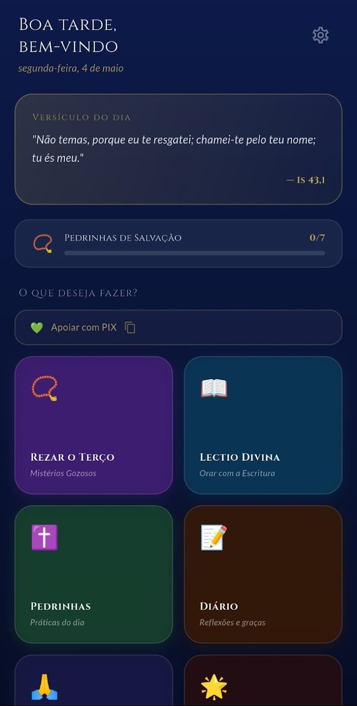
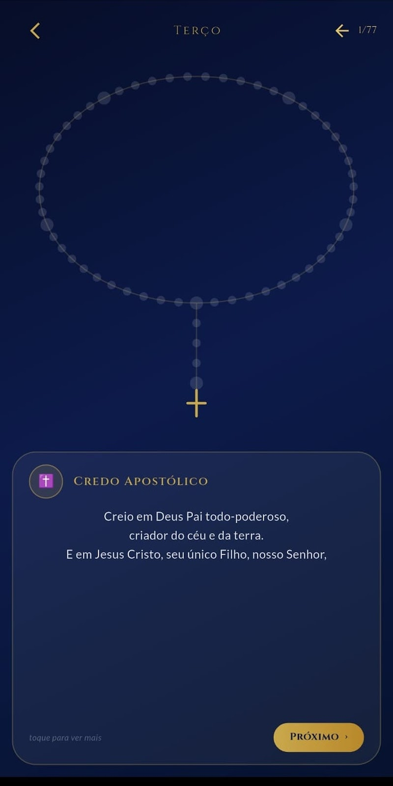
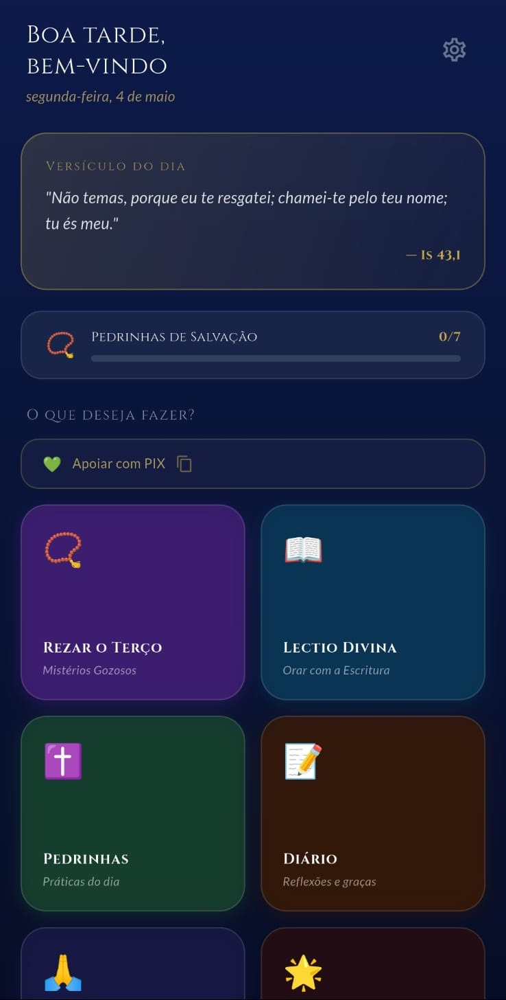

Rosa a Maria
Um companheiro para a sua vida de oração
Acompanhamento espiritual católico inspirado na devoção a Nossa Senhora — para rezar melhor, todos os dias.
O que você encontra
📿
Terço completo
Reze o Santo Rosário com guia passo a passo, mistérios do dia e oração de Fátima.
📖
Lectio Divina
Ore com a Sagrada Escritura nos quatro passos tradicionais: Lectio, Meditatio, Oratio e Contemplatio.
✝️
Pedrinhas de Salvação
Acompanhe 7 práticas diárias: Adoração, Eucaristia, Rosário, Lectio Divina, Confissão, Jejum e Dons do Espírito.
📝
Diário Espiritual
Registre graças, reflexões e intercessões. Seus dados ficam apenas no seu dispositivo.
🙏
Orações
O tesouro de orações da Igreja Católica sempre à mão.
🌟
Mistérios do Rosário
Gozosos, Dolorosos, Gloriosos e Luminosos, com meditações e frutos espirituais.
Veja o app por dentro



Comece hoje a rezar com mais constância
Grátis na Play Store. Que Nossa Senhora abençoe sua jornada de fé. Ave Maria!